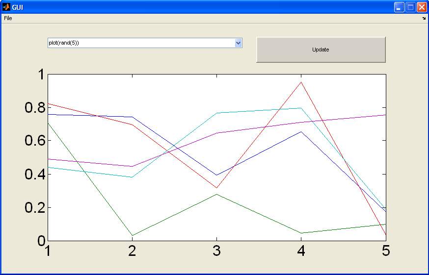

function varargout = GUI(varargin) % GUI M-file for GUI.fig % GUI, by itself, creates a new GUI or raises the existing % singleton*. % % H = GUI returns the handle to a new GUI or the handle to % the existing singleton*. % % GUI('CALLBACK',hObject,eventData,handles,...) calls the local % function named CALLBACK in GUI.M with the given input arguments. % % GUI('Property','Value',...) creates a new GUI or raises the % existing singleton*. Starting from the left, property value pairs are % applied to the GUI before GUI_OpeningFcn gets called. An % unrecognized property name or invalid value makes property application % stop. All inputs are passed to GUI_OpeningFcn via varargin. % % *See GUI Options on GUIDE's Tools menu. Choose "GUI allows only one % instance to run (singleton)". % % See also: GUIDE, GUIDATA, GUIHANDLES % Edit the above text to modify the response to help GUI % Last Modified by GUIDE v2.5 31-Oct-2013 15:16:24 % Begin initialization code - DO NOT EDIT gui_Singleton = 1; gui_State = struct('gui_Name', mfilename, ... 'gui_Singleton', gui_Singleton, ... 'gui_OpeningFcn', @GUI_OpeningFcn, ... 'gui_OutputFcn', @GUI_OutputFcn, ... 'gui_LayoutFcn', [] , ... 'gui_Callback', []); if nargin && ischar(varargin{1}) gui_State.gui_Callback = str2func(varargin{1}); end if nargout [varargout{1:nargout}] = gui_mainfcn(gui_State, varargin{:}); else gui_mainfcn(gui_State, varargin{:}); end % End initialization code - DO NOT EDIT % --- Executes just before GUI is made visible. function GUI_OpeningFcn(hObject, eventdata, handles, varargin) % This function has no output args, see OutputFcn. % hObject handle to figure % eventdata reserved - to be defined in a future version of MATLAB % handles structure with handles and user data (see GUIDATA) % varargin command line arguments to GUI (see VARARGIN) % Choose default command line output for GUI handles.output = hObject; % Update handles structure guidata(hObject, handles); % This sets up the initial plot - only do when we are invisible % so window can get raised using GUI. if strcmp(get(hObject,'Visible'),'off') plot(rand(5)); end % UIWAIT makes GUI wait for user response (see UIRESUME) % uiwait(handles.figure1); % --- Outputs from this function are returned to the command line. function varargout = GUI_OutputFcn(hObject, eventdata, handles) % varargout cell array for returning output args (see VARARGOUT); % hObject handle to figure % eventdata reserved - to be defined in a future version of MATLAB % handles structure with handles and user data (see GUIDATA) % Get default command line output from handles structure varargout{1} = handles.output; % --- Executes on button press in pushbutton1. function pushbutton1_Callback(hObject, eventdata, handles) % hObject handle to pushbutton1 (see GCBO) % eventdata reserved - to be defined in a future version of MATLAB % handles structure with handles and user data (see GUIDATA) axes(handles.axes1); cla; popup_sel_index = get(handles.popupmenu1, 'Value'); switch popup_sel_index case 1 plot(rand(5)); case 2 plot(sin(1:0.01:25.99)); case 3 bar(1:.5:10); case 4 plot(membrane); case 5 surf(peaks); end % -------------------------------------------------------------------- function FileMenu_Callback(hObject, eventdata, handles) % hObject handle to FileMenu (see GCBO) % eventdata reserved - to be defined in a future version of MATLAB % handles structure with handles and user data (see GUIDATA) % -------------------------------------------------------------------- function OpenMenuItem_Callback(hObject, eventdata, handles) % hObject handle to OpenMenuItem (see GCBO) % eventdata reserved - to be defined in a future version of MATLAB % handles structure with handles and user data (see GUIDATA) file = uigetfile('*.fig'); if ~isequal(file, 0) open(file); end % -------------------------------------------------------------------- function PrintMenuItem_Callback(hObject, eventdata, handles) % hObject handle to PrintMenuItem (see GCBO) % eventdata reserved - to be defined in a future version of MATLAB % handles structure with handles and user data (see GUIDATA) printdlg(handles.figure1) % -------------------------------------------------------------------- function CloseMenuItem_Callback(hObject, eventdata, handles) % hObject handle to CloseMenuItem (see GCBO) % eventdata reserved - to be defined in a future version of MATLAB % handles structure with handles and user data (see GUIDATA) selection = questdlg(['Close ' get(handles.figure1,'Name') '?'],... ['Close ' get(handles.figure1,'Name') '...'],... 'Yes','No','Yes'); if strcmp(selection,'No') return; end delete(handles.figure1) % --- Executes on selection change in popupmenu1. function popupmenu1_Callback(hObject, eventdata, handles) % hObject handle to popupmenu1 (see GCBO) % eventdata reserved - to be defined in a future version of MATLAB % handles structure with handles and user data (see GUIDATA) % Hints: contents = get(hObject,'String') returns popupmenu1 contents as cell array % contents{get(hObject,'Value')} returns selected item from popupmenu1 % --- Executes during object creation, after setting all properties. function popupmenu1_CreateFcn(hObject, eventdata, handles) % hObject handle to popupmenu1 (see GCBO) % eventdata reserved - to be defined in a future version of MATLAB % handles empty - handles not created until after all CreateFcns called % Hint: popupmenu controls usually have a white background on Windows. % See ISPC and COMPUTER. if ispc && isequal(get(hObject,'BackgroundColor'), get(0,'defaultUicontrolBackgroundColor')) set(hObject,'BackgroundColor','white'); end set(hObject, 'String', {'plot(rand(5))', 'plot(sin(1:0.01:25))', 'bar(1:.5:10)', 'plot(membrane)', 'surf(peaks)'});